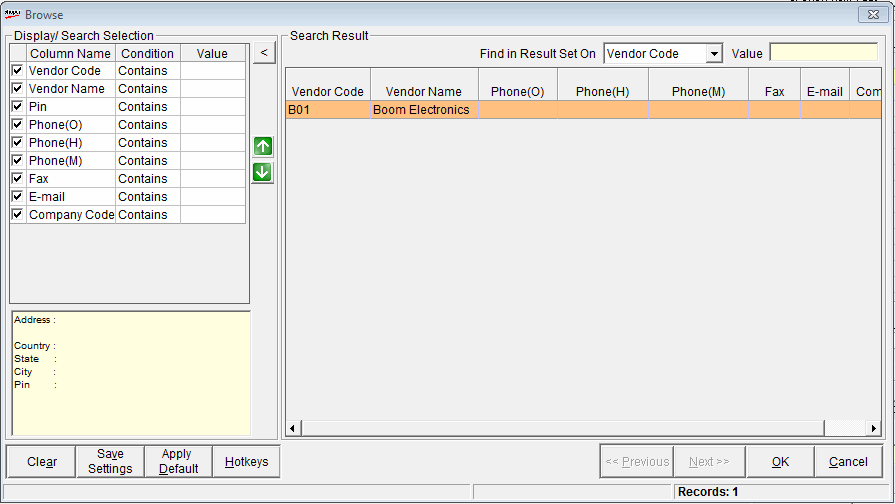

Party Code Selection
The Browse
window is as shown.

Display
Search Selection: Select the appropriate fields under Column
Name and configure the value under Condition.
Enter the required input under Value.
Press Enter to accept the search
results.
Clear: To
remove the search details.
Save Settings:
To save the search details for future use.
Apply Default:
To apply the default search details instead of the saved details.
Hotkeys:
To display the details under Hotkeys
List
Select the required Vendor
Code by clicking on the row and click Ok.
If you double click a row, the Vendor details are copied to the outwards
window.
Ok: To copy the selected party details
to the outwards window and close the Browse window
Cancel: To close the Browse window
without selecting any party details